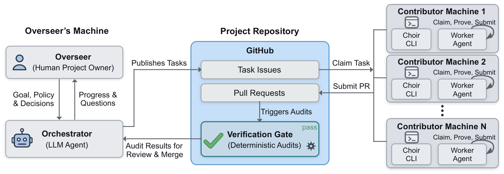
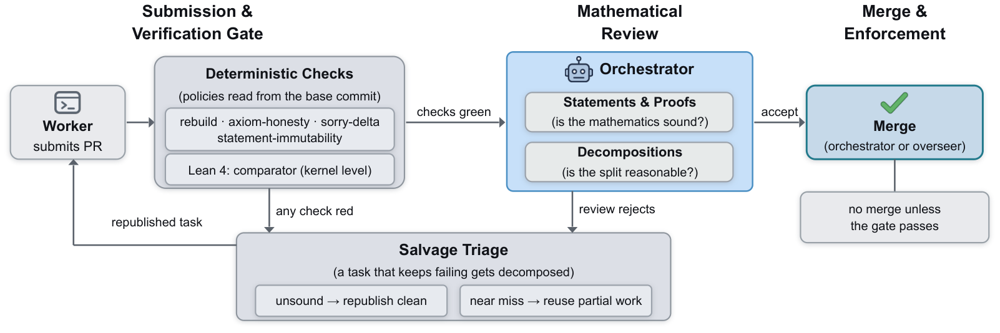
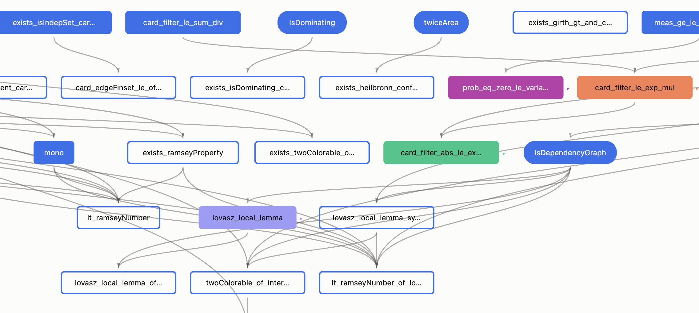

Presents Choir, an open protocol for distributed multi-agent autoformalization, tested mainly on textbook-level Lean 4 projects.
Abstract
AI agents can now formalize entire textbooks and major theorems in proof assistants such as Lean, but current efforts are typically centralized: a single team runs all agents and bears the full computational cost. We introduce Choir, an open protocol for distributed formalization. Choir decomposes a project into tasks that can be completed by independent contributors, each running their own agent with their own LLM subscription, while coordinating entirely through the project's GitHub repository. To support open participation, every contribution is checked by a deterministic gate before merge. Choir supports Lean 4, Isabelle, and Rocq, and is open source and modular, allowing projects to replace individual components or extend the protocol.
Problem
Large-scale AI-driven formalization in proof assistants is typically centralized, with a single team running all agents and bearing the full computational cost, putting it out of reach for typical academic groups.
Approach
Choir decomposes a formalization project into typed tasks coordinated entirely through a GitHub repository. A human overseer runs an orchestrator agent that plans, authors theorem statements, and publishes tasks as GitHub issues, while independent contributors run their own worker agents on their own LLM subscriptions to claim and prove tasks via pull requests. A deterministic gate implemented in GitHub Actions checks each submission (rebuild from source, statement immutability, axiom inventory) before the orchestrator merges it. The protocol supports Lean 4, Isabelle, and Rocq.

Figure 1: The orchestrator publishes tasks as GitHub issues, and workers on contributors’ own machines claim them and submit pull requests. The gate audits each pull request before the orchestrator reviews and merges it.

Figure 2: The path of a pull request. The gate’s checks run first, and only a pull request that passes them reaches the orchestrator’s review. When either stage rejects it, the orchestrator can republish the task, from scratch if the work is unsound or from the partial work if it is a near miss.
Results
Choir has been tested mainly on textbook-level autoformalization in Lean 4 with a few workers running commercial models such as Claude Opus 5 and GPT-5.6, with a history visualizer replaying the proof tree's construction.

Figure 3: Part of the Zhao formalization’s proof tree in the history visualizer, partway through the project. Blue fill marks proved nodes, a blue outline published tasks, and each other color one worker’s claim; rounded boxes are definitions.